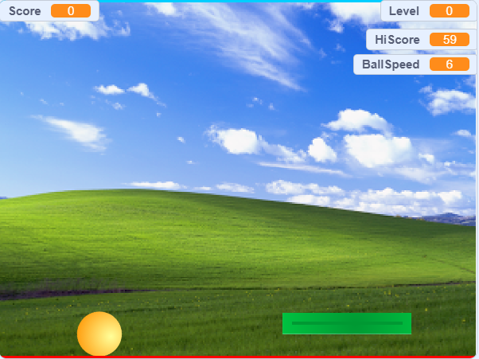
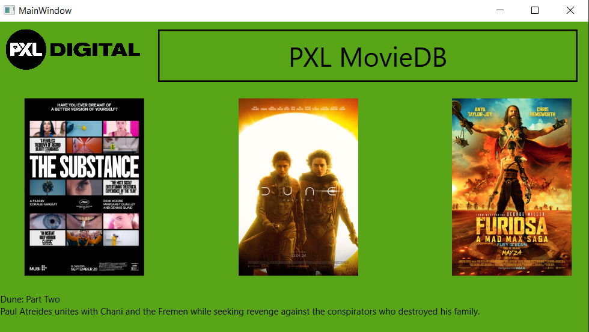
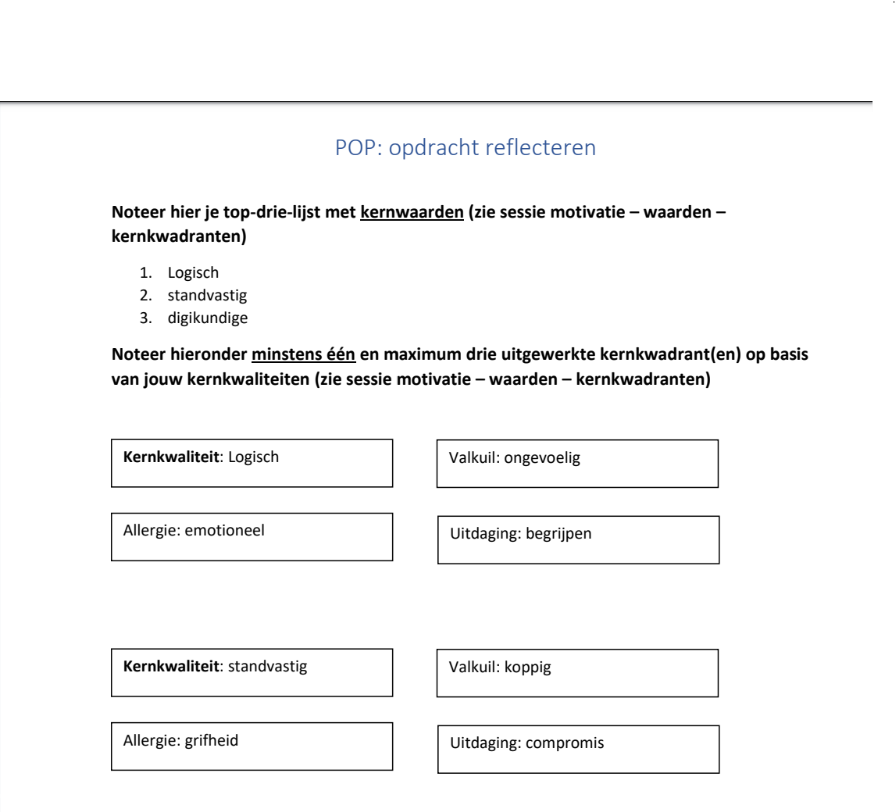
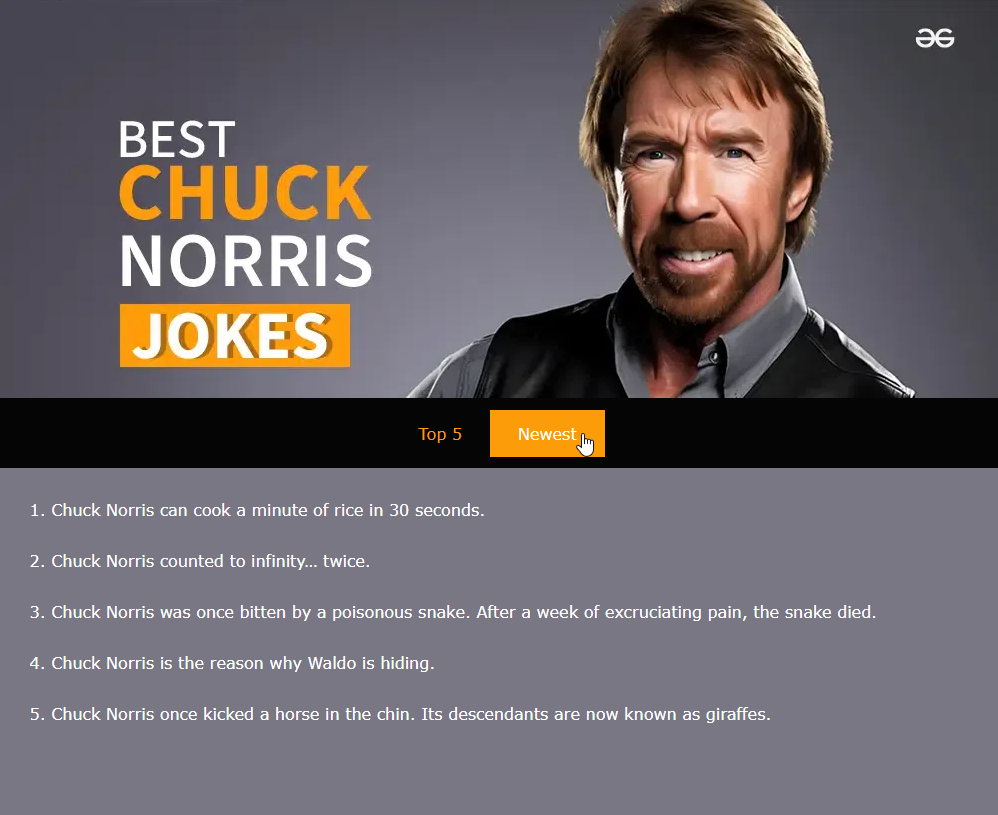
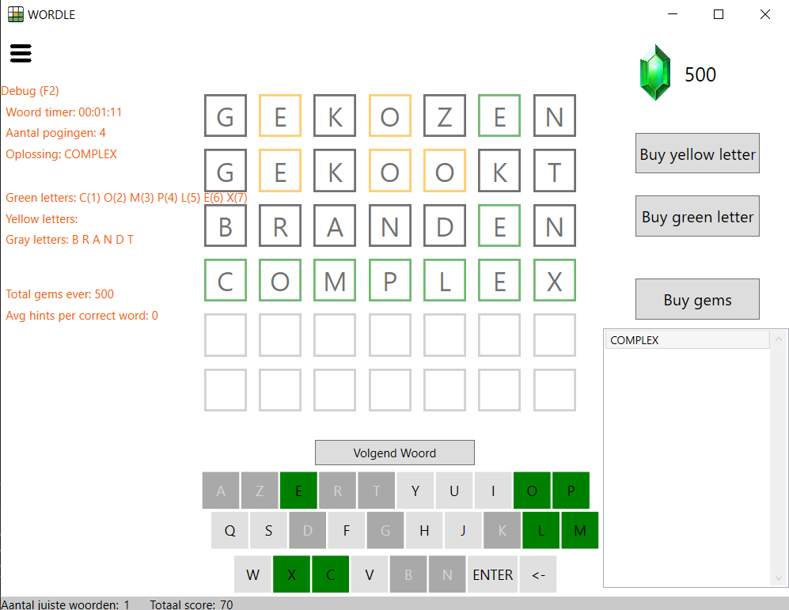

PXL-Pong
30-09-2024

Een scratch-project dat ik op het begin van het jaar maakten, een ping pong game met verschillende features zoals levels en een physics based ball. Via het node-based programmeren van scratch, werd ik warm voor het echte werk. Ik kreeg een basis idee van hoe programmeren werkt en de algemene logica erachter. Toch was door de limitaties van de codeer taal, het moeilijk om sommige functionaliteit te maken zoals de beweging van de ball.
PXL-MovieDB
05-10-2024

Een PE taak waar we de basis van een WPL-applicatie en de code behind toepassen in een kleine applicatie om de beschrijving van bepaalde films te zien. We moesten zelf opzoeken hoe je bepaalde functionaliteit moet toevoegen om zo het resultaat te bereiken. Deze ging voor mij zeer vlot en had niet echt moeilijkheden
POP-opdracht reflecteren
20-10-2024

Een zelf reflectie taak waar we onze sterktes en valkuilen moesten bepalen. Door te kijken wat ik goed kan vind ik mijn sterktes, maar ook mogelijke valkuilen die hieruit kunnen voorkomen. He was moeilijk om zelf kritisch te zijn, maar uiteindelijk ben ik veel van mezelf te weten gekomen en hoe ik het me het beste verbeter in de toekomst.
Chuck site
05-11-2024

Een ludieke taak waar ik mijn kennis van HTLM, maar ook github, laat zien die we tot dan gezien hadden door een website over Chuck Norris grappen te creëren. De website zelf ging goed, maar github ging stroef en ik moest veel opnieuw beginnen en leren om het correct te pushen naar de git repo. Maar uiteindelijk is het gelukt en heb ik geleerd hoe je vlo met github werkt voor een project
Wordle
19-12-2024

Dit is de ultieme taak voor WPL1. We moesten zelf wordle namaken, niet alleen de basis, maar ook veel extra functies zoals het kopen van hints en een debug-menu. Deze applicatie werd periodiek ge-updated met meer functionaliteit om uiteindelijk tot een feature-rich applicatie te komen. De laatste loodjes en functies gingen stroef omdat ik zeer veel code moest beheren, maar het hef me wel geleerd hoe grote applicaties er kunnen uitzien en je het beste de code beheert.